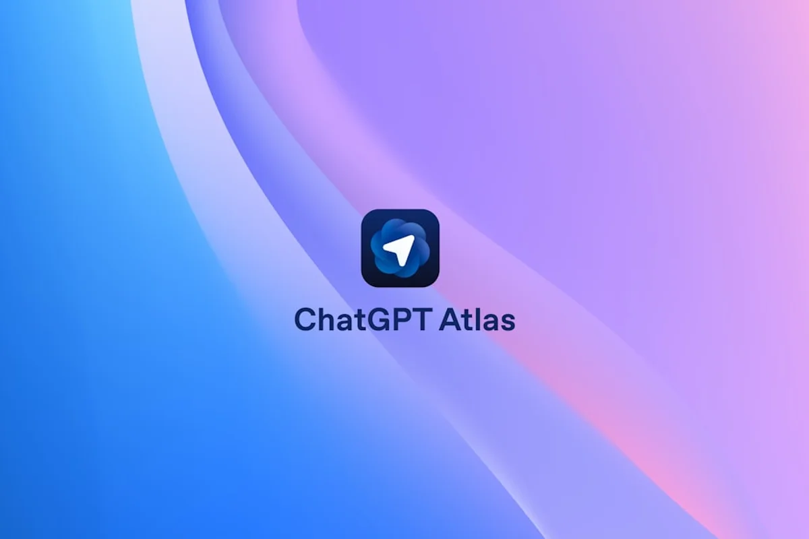
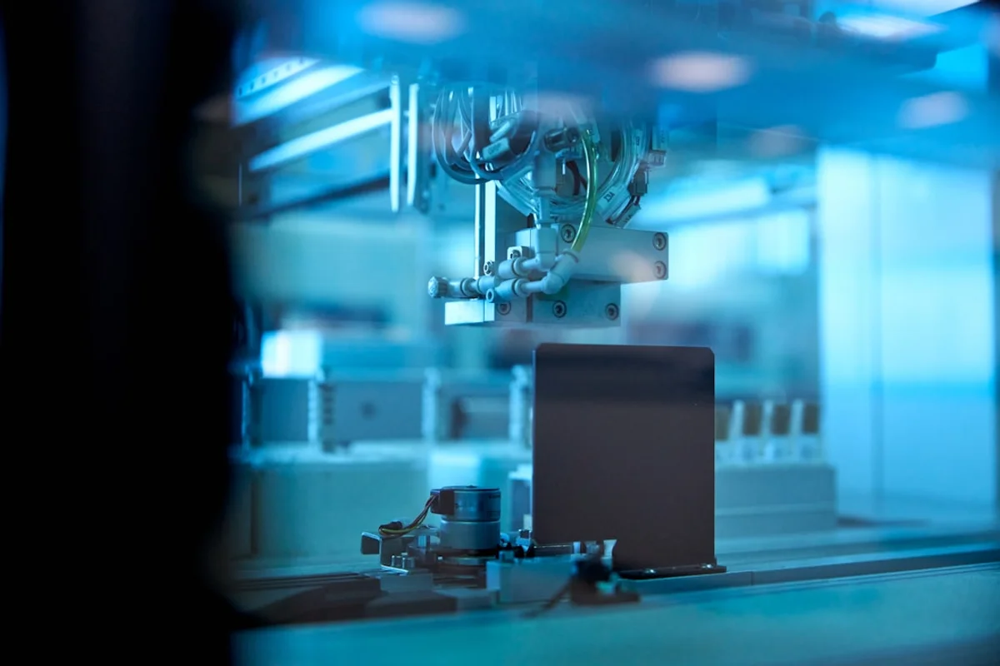

Introduction
The pace of AI development in 2026 has been, by any honest measure, staggering. If the latest AI news breakthroughs 2026 have felt impossible to keep up with, that reaction is entirely reasonable. Between new model releases arriving faster than software updates, market share reshuffles that would have seemed unthinkable twelve months ago, and hardware research that reads more like science fiction than engineering, the mid-year picture deserves a proper, calm assessment.
This post is not a breathless hype piece. It is a structured look at what has actually happened, what it means, and where the quiet but important signals are hiding beneath the noise. The goal is simple: to give curious, internationally minded readers, whether they are travellers, creatives, or professionals, a genuinely useful orientation to where artificial intelligence stands as of mid-2026.
The timing matters too. June 2026 has turned out to be a genuinely pivotal month, with Anthropic's pricing strategy for its newest model sparking a wider debate about who AI is really being built for, while academic researchers announced hardware that could change the economics of everything. Consider this the mid-year briefing you actually wanted.
The Market Share Earthquake: ChatGPT Below 50% for the First Time
For years, ChatGPT occupied such a dominant position in the AI assistant landscape that its name became almost synonymous with the category. That era has now measurably ended. According to Sensor Tower's 2026 State of AI Report, ChatGPT's market share fell to 46.4% by late May 2026, the first time the platform has dropped below the 50% threshold since its explosive public launch.
The beneficiaries are clear. Google Gemini climbed to 27.7%, a remarkable ascent fuelled by deep integration across Android devices and Google Workspace. Anthropic's Claude reached 10.3%, a figure that would have seemed wildly optimistic just eighteen months ago.
What does this actually mean beyond the headline? A few things worth noting. First, the AI assistant market is maturing into a multi-player landscape, which historically benefits users through competition on price, features, and transparency. Second, Gemini's rise is not purely organic quality improvement: it is substantially driven by distribution, the same advantage that once made Internet Explorer dominant. Third, Claude's 10.3% is arguably the most interesting number in the set, because it represents genuine product preference rather than bundled reach. People are actively choosing it.
The deeper implication is that the so-called AI moat, the idea that first-mover advantage would lock users in indefinitely, has proven far shallower than investors assumed. Switching costs between AI assistants are low. Users are voting with their sessions, and the votes are diversifying.
Anthropic's Fable 5 Pricing and the Question of Who AI Is For
In mid-June 2026, Anthropic released access to what it calls Fable 5, its most capable model to date. The technical benchmarks have drawn significant attention. But the story that has generated the sharpest debate is the pricing structure.
Access to Fable 5 requires purchasing usage credits separately at the API rate of $10 per million input tokens and $50 per million output tokens. That output price is double what developers were paying for Claude Opus 4.8, the previous flagship. For context, one million output tokens represents roughly 750,000 words of generated text, approximately the length of ten average novels.
At those rates, a small startup building a customer-facing product on Fable 5 could face API bills that scale uncomfortably fast. A developer running a modest literary analysis tool processing 50,000 output tokens per day would spend around $900 per month on output alone, before factoring in infrastructure, input tokens, or human review costs.
The counter-argument from Anthropic's camp is that Fable 5's capability curve justifies the premium: fewer calls are needed to achieve a given task, and the error rate on complex reasoning drops significantly compared to predecessor models. This is plausible but difficult to verify without granular benchmark data that Anthropic has not yet made fully public.
The broader tension here is one the AI industry has been circling for two years. As models become more capable, they also become more expensive to run and to access. The democratisation narrative, the idea that powerful AI would become universally cheap and available, is bumping up against the economic reality that frontier model training and inference carry enormous costs. Fable 5's pricing is the most explicit statement yet that frontier AI, for the foreseeable future, may be priced for enterprises and well-funded developers rather than individual creators.

The Physics Breakthrough That Could Quietly Change Everything
Buried beneath the model release announcements and market share debates is a piece of research from the University of Pennsylvania that deserves considerably more attention than it has received in mainstream coverage.
Researchers at Penn have created a hybrid light-matter particle, technically a polariton-based system, that could dramatically accelerate AI computing while consuming far less energy than conventional silicon-based processors. The core idea is elegant: instead of moving electrons through circuits (which generates heat and requires power), the system uses photons coupled with matter excitations to perform computations. Light, essentially, does the heavy lifting.
The energy implications are not trivial. Current large language model training runs consume electricity on a scale comparable to small towns. Inference, the process of actually running a model to generate a response, is estimated to account for the majority of operational AI energy costs at scale. A hardware architecture that performs equivalent computation at a fraction of the energy cost would not just be a technical curiosity; it would reshape the economics and the environmental footprint of the entire industry.
It is worth being precise about where this research currently stands. The Penn results are at the materials science and proof-of-concept stage. The path from a lab demonstration of a hybrid light-matter particle to a commercially manufactured AI accelerator chip involves years of engineering, fabrication challenges, and capital investment. But the significance of having a working physical demonstration is that the theoretical objections are now much harder to sustain. The question has shifted from "can this work" to "how long will it take to scale."
For travellers and creatives reading this, the practical takeaway is this: the AI tools available in 2028 or 2030 may run on fundamentally different physics than the ones available today, and that transition could make powerful AI genuinely accessible in lower-infrastructure environments, including regions of the world currently underserved by data centre capacity.
The Insider Angle: Why the Real Competition Is Not Between Chatbots
Most coverage of AI in 2026 continues to frame the story as a chatbot race: OpenAI versus Anthropic versus Google, measured in benchmark scores and market share percentages. This framing is increasingly misleading, and it misses where the genuinely consequential competition is happening.
The real contest in mid-2026 is at the infrastructure and tooling layer. Who controls the pipelines through which AI is delivered into actual products? Who owns the fine-tuning infrastructure that lets businesses customise models for their specific use cases? Who is building the evaluation frameworks that allow developers to trust model outputs in high-stakes domains like medicine, law, and financial advice?
Companies like Together AI, Fireworks AI, and the emerging class of "model routers" that dynamically select which underlying model answers a given query are positioning themselves as the neutral infrastructure layer. Their bet is that individual frontier models will commoditise faster than people expect, and that the durable value lies in routing, caching, and orchestration.
This is, historically, a sound bet. The internet's most durable companies were rarely the ones that created the most exciting content. They were the ones that built the pipes and directories. If that pattern holds for AI, the chatbot wars may matter far less in five years than the quiet infrastructure battles being fought in server rooms and API documentation today.
For anyone building products on AI, or evaluating which platforms to trust with meaningful work, understanding this layer is considerably more valuable than tracking which model scored highest on last month's reasoning benchmark.

Mid-2026 AI Timeline: Key Dates, Numbers, and Facts at a Glance
For readers who want the structured data layer, here is a precise summary of the key facts and figures from the mid-2026 AI landscape:
- ChatGPT market share (late May 2026): 46.4%, down from an estimated 55%+ in mid-2025. Source: Sensor Tower 2026 State of AI Report.
- Google Gemini market share: 27.7%, making it the clear second-place player in the AI assistant category.
- Claude (Anthropic) market share: 10.3%, the strongest performance to date for Anthropic's consumer-facing product.
- Fable 5 API pricing: $10 per million input tokens; $50 per million output tokens. Output pricing is double that of Claude Opus 4.8.
- Penn polariton research: Published in June 2026; demonstrates hybrid light-matter computation at proof-of-concept scale. Not yet commercially available.
- Energy context: Training a single large frontier model currently consumes energy equivalent to approximately 500 transatlantic flights, according to estimates from multiple independent researchers.
- Model count: As of June 2026, more than 1,200 distinct foundation models have been publicly released or documented, up from approximately 300 in 2024, according to tracking maintained by Hugging Face.
These numbers tell a story that the narrative coverage sometimes obscures: the AI market is simultaneously consolidating at the top (a handful of frontier models dominating usage) and exploding at the base (thousands of smaller, specialised models proliferating for niche applications). Both things are true at once.
Final Thoughts
Mid-2026 is a genuinely interesting inflection point for artificial intelligence, not because of any single dramatic announcement, but because several trends that have been building quietly are now visible in hard data. Market share is fragmenting. Pricing for frontier models is moving upward in ways that raise real questions about accessibility. And underneath all of it, researchers are laying the physical groundwork for a hardware transition that could eventually change the economics of the entire field.
The honest advice for anyone trying to navigate this landscape, whether as a developer, a creative professional, or simply a curious person trying to make sense of the news, is to pay less attention to benchmark headlines and more attention to pricing structures, infrastructure ownership, and energy research. Those are the slower-moving but more durable signals.
If this mid-year breakdown helped clarify the picture for you, share it with someone who would also appreciate a calmer, more grounded take on the AI noise. The conversation is better when more people come to it well-informed.
Frequently Asked Questions
What is the current market share of ChatGPT in 2026?
According to Sensor Tower's 2026 State of AI Report, ChatGPT's market share fell to 46.4% by late May 2026, the first time it has dropped below 50%. Google Gemini holds 27.7% and Anthropic's Claude holds 10.3%.
How much does Anthropic's Fable 5 cost via API?
Fable 5 is priced at $10 per million input tokens and $50 per million output tokens. The output price is double that of its predecessor, Claude Opus 4.8, making it one of the most expensive frontier model APIs currently available.
What is the University of Pennsylvania AI hardware breakthrough in 2026?
Researchers at Penn created a hybrid light-matter particle (a polariton-based system) that could perform AI computations dramatically faster and with far less energy than conventional silicon chips. The research is currently at proof-of-concept stage and not yet commercially available.
Why did ChatGPT lose market share in 2026?
ChatGPT's decline below 50% market share reflects growing competition from Google Gemini, which benefits from deep integration across Android and Google Workspace, and from Anthropic's Claude, which has gained users through genuine product preference. Lower switching costs between AI assistants have accelerated the shift.
How many AI models exist as of mid-2026?
As of June 2026, more than 1,200 distinct foundation models have been publicly released or documented, according to tracking maintained by Hugging Face. This compares to approximately 300 in 2024, reflecting rapid proliferation of specialised and open-source models.